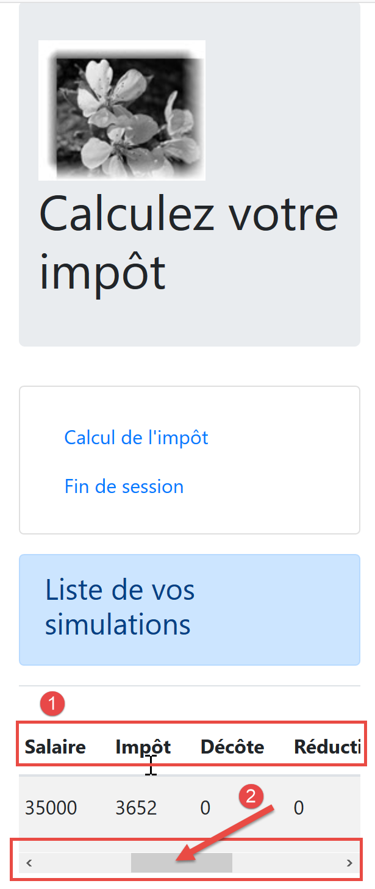

19. Vue.js Client Improvements
19.1. Introduction
We will test the [vuejs-21] project with the development server. Therefore, we will again need the server to send CORS headers. The [config.json] file for version 14 of the tax calculation server must therefore allow these headers:

The [vuejs-21] project is initially created by duplicating the [vuejs-20] project. It is then modified [3].
New files appear:
- [session.js]: exports a [session] object that will encapsulate information about the current session;
- [pluginSession]: makes the previous [session] object available in the [$session] property of the views;
- [NotFound.vue]: a new view displayed when the user manually requests a URL that does not exist;
The following files will be modified:
- [main.js]: will initialize the current session and then restore it when the user manually enters a URL;
- [router.js]: controls are added to handle URLs entered by the user;
- [store.js]: a new mutation is added;
- [config.js]: a new configuration is added;
- various views, primarily to save the current session at key points in the application’s lifecycle. The session is then restored whenever the user manually enters URLs;
19.2. The [Vuex] store
The [./store] script evolves as follows:
// Vuex plugin
import Vue from 'vue'
import Vuex from 'vuex'
Vue.use(Vuex);
// Vuex store
const store = new Vuex.Store({
state: {
// the array of simulations
simulations: [],
// the number of the last simulation
simulationId: 0
},
changes: {
// delete row index
deleteSimulation(state, index) {
...
},
// add a simulation
addSimulation(state, simulation) {
...
},
// clear state
clear(state) {
// no more simulations
state.simulations = [];
// simulation numbering resets to 0
state.simulationId = 0;
}
}
});
// export the [store] object
export default store;
- lines 24-29: the [clear] assignment deletes the list of saved simulations and resets the last simulation number to 0.
19.3. The session
The need for a session arises because when the user types a URL into the browser’s address bar, the [main.js] script is executed again. However, this script contains the following instruction:
// Vuex store
import store from './store'
This instruction imports the following [./store] file:
// Vuex plugin
import Vue from 'vue'
import Vuex from 'vuex'
Vue.use(Vuex);
// Vuex store
const store = new Vuex.Store({
state: {
// the array of simulations
simulations: [],
// the number of the last simulation
simulationId: 0
},
changes: {
...
}
});
// export the [store] object
export default store;
As we can see in lines 7–13, we import an empty array of simulations. So if we had simulations before the user typed a URL into the browser’s address bar, we no longer have any afterward. The idea is:
- to use a session that would store the information you want to keep if the user manually enters URLs;
- save it at key points in the application;
- restore it in [main.js], which is always executed when a URL is entered manually;
The [./session] script is as follows:
// import the Vuex store
import store from './store'
// import the configuration
import config from './config';
// the [session] object
const session = {
// session started
started: false,
// authentication
authenticated: false,
// save time
saveTime: "",
// [business] layer
business: null,
// Vuex state
state: null,
// Save the session as a JSON string
save() {
// add some properties to the session
this.saveTime = Date.now();
this.state = store.state;
// convert it to JSON
const json = JSON.stringify(this);
// Store it in the browser
localStorage.setItem("session", json);
// eslint-disable-next-line no-console
console.log("session saved", json);
},
// restore the session
restore() {
// retrieve the JSON session from the browser
const json = localStorage.getItem("session")
// if something was retrieved
if (json) {
// restore all session keys
const restore = JSON.parse(json);
for (var key in restore) {
if (restore.hasOwnProperty(key)) {
this[key] = restore[key];
}
}
// if a certain period of inactivity has elapsed since the start of the session, reset to zero
let duration = Date.now() - this.saveTime;
if (duration > config.sessionDuration) {
// clear the session—it will also be saved
session.clear();
} else {
// regenerate the Vuex store
store.replaceState(JSON.parse(JSON.stringify(this.state)));
}
}
// eslint-disable-next-line no-console
console.log("session restore", this);
},
// clear the session
clear() {
// eslint-disable-next-line no-console
console.log("session clear");
// Clear certain session fields
this.authenticated = false;
this.saveTime = "";
this.started = false;
if (this.job) {
// reset the [taxAdminData] field
this.profession.taxAdminData = null;
}
// The Vuex store is also cleared
store.commit("clear");
// Save the new session
this.save();
},
}
// export the [session] object
export default session;
Comments
- line 2: the session will also encapsulate the [Vuex] store (list of simulations, ID of the last simulation performed);
- lines 7-17: information stored by the session:
- [started]: whether the JSON session with the server has started or not;
- [authenticated]: whether the user has authenticated or not;
- [saveTime]: the date in milliseconds of the last save;
- [business] : a reference to the [business] layer. This contains the [taxAdminData] data used to calculate the tax;
- [state]: the state of the [Vuex] store (list of simulations, number of the last simulation performed);
- lines 20–30: the [save] method saves the session locally on the browser running the application;
- line 22: the save time is recorded;
- line 23: the [state] of the [Vuex] store is retrieved;
- line 25: the session’s JSON string is created;
- line 27: it is stored locally on the browser associated with the [session] key;
- lines 33–57: the [restore] method restores a session from its local save in the browser;
- line 35: retrieve the local JSON backup;
- line 37: if something was retrieved;
- lines 39–44: the [session] object is reconstructed;
- line 46: the time elapsed since the last backup is calculated;
- lines 47–50: if this duration exceeds a value [config.sessionDuration] set in the configuration, the session is reset (line 49) and saved at that time;
- line 52: otherwise, the [state] attribute of the [Vuex] store is regenerated;
- lines 60–75: the [clear] method resets the session;
- lines 64–70: the session properties are reset to their initial values;
- line 72: as well as the [Vuex] store;
- line 74: the new session is saved;
19.4. The [config] configuration file
The [./config] file evolves as follows:
// using the [axios] library
const axios = require('axios');
// HTTP request timeout
axios.defaults.timeout = 2000;
...
// Export the configuration
export default {
// [axios] object
axios: axios,
// maximum session inactivity timeout: 5 min = 300 s = 300,000 ms
sessionDuration: 300000
}
- line 12: we’ll manage the application session much like we manage a web session. Here, we set a maximum inactivity duration of 5 minutes;
19.5. The [pluginSession] plugin
As has been done many times before, the [pluginSession] plugin will allow views to access the session via the [this.$session] property:
export default {
install(Vue, session) {
// adds a [$session] property to the view class
Object.defineProperty(Vue.prototype, '$session', {
// when Vue.$session is referenced, we return the second parameter [session]
get: () => session,
})
}
}
19.6. The main script [main]
The main script [./main.js] evolves as follows:
// startup log
// eslint-disable-next-line no-console
console.log("main started");
// imports
import Vue from 'vue'
...
// instantiate [business] layer
import Business from './layers/Business';
const business = new Business();
// [business] plugin
import BusinessPlugin from './plugins/BusinessPlugin'
Vue.use(businessPlugin, business)
// Vuex store
import store from './store'
// session
import session from './session';
import pluginSession from './plugins/pluginSession'
Vue.use(pluginSession, session)
// Restore the session before restarting
session.restore();
// restore the [business] layer
if (session.business && session.business.taxAdminData) {
business.setTaxAdminData(session.business.taxAdminData);
}
// Start the UI
new Vue({
el: '#app',
// the router
router: router,
// the Vuex store
store: store,
// the main view
render: h => h(Main),
})
// end log
// eslint-disable-next-line no-console
console.log("main terminated, session=", session);
- line 19: import the session;
- line 20: import the plugin;
- line 21: the [pluginSession] plugin is integrated into [Vue]. After this instruction, all views have the session available in their [$session] attribute;
- line 27: the session is restored. The session imported on line 11 is then initialized with the contents of its last save;
- after line 16, the views have a [$métier] property initialized on line 12. This property does not contain the [taxAdminData] information used to calculate the tax;
- lines 30–32: if the restoration just performed has restored the [session.métier.taxAdminData] property, then the [$métier] property of the views is initialized with this value;
19.7. The routing file [router]
The routing file [./router] evolves as follows:
// imports
import Vue from 'vue'
import VueRouter from 'vue-router'
// views
import Authentication from './views/Authentication'
import TaxCalculation from './views/TaxCalculation'
import SimulationList from './views/SimulationList'
import NotFound from './views/NotFound'
// the session
import session from './session'
// routing plugin
Vue.use(VueRouter)
// application routes
const routes = [
// authentication
{ path: '/', name: 'authentication', component: Authentication },
{ path: '/authentication', name: 'authentication', component: Authentication },
// tax calculation
{
path: '/tax-calculation', name: 'taxCalculation', component: TaxCalculation,
meta: { authenticated: true }
},
// list of simulations
{
path: '/list-of-simulations', name: 'listSimulations', component: ListSimulations,
meta: { authenticated: true }
},
// end of session
{
path: '/end-session', name: 'endSession'
},
// unknown page
{
path: '*', name: 'notFound', component: NotFound,
},
]
// the router
const router = new VueRouter({
// the routes
routes,
// URL display mode
mode: 'history',
// the application's base URL
base: '/client-vuejs-tax/'
})
// route validation
router.beforeEach((to, from, next) => {
// eslint-disable-next-line no-console
console.log("router to=", to, "from=", from);
// route reserved for authenticated users?
if (to.meta.authenticated && !session.authenticated) {
next({
// proceed to authentication
name: 'authentication',
})
// return to the event loop
return;
}
// special case for end of session
if (to.name === "endSession") {
// clear the session
session.clear();
// go to the [authentication] view
next({
name: 'authentication',
})
// return to the event loop
return;
}
// other cases - next normal view in the routing
next();
})
// export the router
export default router
Comments
- lines 16–38: some routes have been enhanced with additional information;
- line 19: a new route has been created to go to the [Authentication] view;
- lines 21–24: The route leading to the [TaxCalculation] view now has a [meta] property (this name is required). The content of this object can be anything and is set by the developer;
- line 23: We add the [authenticated] property to [meta] (this name can be anything). This means that to access the [TaxCalculation] view, the user must be authenticated;
- lines 26–29: we do the same for the route leading to the [ListeSimulations] view. Here too, the user must be authenticated;
- The [meta.authenticated] property will allow us to verify that a user who manually types the URLs for the [CalculImpot] and [ListeSimulations] views cannot access them if they are not authenticated;
- lines 51–76: The [beforeEach] method is executed before a view is routed. This is the right time to perform checks;
- [to]: the next route if nothing is done;
- [from]: the last route displayed;
- [next]: function to change the next route displayed;
- line 55: we check if the next route requires the user to be authenticated;
- lines 56–59: if so, and the user is not authenticated, we change the next route to the [Authentication] view;
- lines 64–73: handle the special case of the [endSession] route from lines 30–32. This route has no associated view;
- line 66: the session is reset to its initial value;
- lines 68–70: set the [Authentication] view as the next view;
- line 75: if neither of the previous two cases applies, we simply proceed to the route specified by the routing file;
- lines 35–37: a [NotFound] view is provided if the route entered by the user does not match any known route. This view is imported on line 8. Routes are checked in the order of the routing file. Therefore, if we reach line 36, it means the requested route is none of the routes in lines 18–33;
19.8. The [NotFound] view
The [NotFound] view is displayed if the route entered by the user does not match any known route:

The view code is as follows:
<!-- HTML definition of the view -->
<template>
<!-- layout -->
<Layout :left="true" :right="true">
<!-- alert in the right column -->
<template slot="right">
<!-- message on yellow background -->
<b-alert show variant="danger" align="center">
<h4>This page does not exist</h4>
</b-alert>
</template>
<!-- navigation menu in the left column -->
<Menu slot="left" :options="options" />
</Layout>
</template>
<script>
// imports
import Layout from "./Layout";
import Menu from "./Menu";
export default {
// components
components: {
Layout,
Menu
},
// internal state of the component
data() {
return {
// navigation menu options
options: [
{
text: "Authentication",
path: "/"
}
]
};
},
// lifecycle
created() {
// eslint-disable-next-line
console.log("NotFound created");
// check which menu options to offer
if (this.$session.authenticated && this.$role.taxAdminData) {
// the user can run simulations
Array.prototype.push.apply(this.options, [
{
text: "Tax Calculation",
path: "/tax-calculation"
},
{
text: "List of simulations",
path: "/list-of-simulations"
}
]);
}
}
};
</script>
Comments
- line 4: it uses both columns of the routed views;
- lines 6–11: an error message;
- line 13: the navigation menu occupies the left column;
- lines 31–36: the menu’s default options;
- lines 40–57: code executed when the view is created;
- line 44: checks whether the user can run simulations;
- lines 45–55: if so, two options are added to the navigation menu—those requiring authentication and an operational [business] layer (lines 46–55);
19.9. The [Authentication] view
The [Authentication] view evolves as follows:
<!-- HTML definition of the view -->
<template>
<Layout :left="false" :right="true">
...
</Layout>
</template>
<!-- view dynamics -->
<script>
import Layout from "./Layout";
export default {
// component state
data() {
return {
// user
user: "",
// their password
password: "",
// controls whether an error message is displayed
showError: false,
// the error message
message: ""
};
},
// components used
components: {
Layout
},
// computed properties
computed: {
// valid inputs
valid() {
return this.user && this.password && this.$session.started;
}
},
// event handlers
methods: {
// ----------- authentication
async login() {
try {
// start waiting
this.$emit("loading", true);
// not yet authenticated
this.$session.authenticated = false;
// Blocking authentication with the server
const response = await this.$dao.authenticateUser(
this.user,
this.password
);
// end of loading
this.$emit("loading", false);
// analyze the server response
if (response.status != 200) {
// display the error
this.message = response.response;
this.showError = true;
// return to the event loop
return;
}
// no error
this.showError = false;
// we are authenticated
this.$session.authenticated = true;
// --------- now requesting data from the tax authority
// initially, no data
this.$business.setTaxAdminData(null);
// start waiting
this.$emit("loading", true);
// Blocking request to the server
const response2 = await this.$dao.getAdminData();
// end of loading
this.$emit("loading", false);
// parse the response
if (response2.status != 1000) {
// display the error
this.message = response2.response;
this.showError = true;
// return to the event loop
return;
}
// no error
this.showError = false;
// store the received data in the [business] layer
this.$business.setTaxAdminData(response2.response);
// we can proceed to the tax calculation
this.$router.push({ name: "calculImpot" });
} catch (error) {
// we propagate the error to the main component
this.$emit("error", error);
} finally {
// update session
this.$session.job = this.$job;
// Save the session
this.$session.save();
}
}
},
// lifecycle: the component has just been created
created() {
// eslint-disable-next-line
console.log("Authentication created");
// Can the user run simulations?
if (
this.$session.started &&
this.$session.authenticated &&
this.$business.taxAdminData
) {
// then the user can run simulations
this.$router.push({ name: "taxCalculation" });
// return to the event loop
return;
}
// if the JSON session has already been started, do not restart it
if (!this.$session.started) {
// start waiting
this.$emit("loading", true);
// initialize the session with the server - asynchronous request
// use the promise returned by the [dao] layer methods
this.$dao
// Initialize a JSON session
.initSession()
// we received the response
.then(response => {
// end of wait
this.$emit("loading", false);
// analyze the response
if (response.status != 700) {
// display the error
this.message = response.response;
this.showError = true;
// return to the event loop
return;
}
// The session has started
this.$session.started = true;
})
// in case of an error
.catch(error => {
// we propagate the error to the [Main] view
this.$emit("error", error);
})
// in all cases
.finally(() => {
// save the session
this.$session.save();
});
}
}
};
</script>
Comments
- The statements that use the session introduced in this version of the [Vue.js] client are highlighted in yellow;
- lines 97, 148: at the end of the [login, created] methods, the session is saved regardless of the result of the HTTP requests that occur within these methods (the [finally] clause in both cases);
- the [created] method in lines 102–150 is executed every time the [Authentication] view is created. If the user typed the view’s URL, the session will tell us what to do;
- lines 106–115: if the JSON session is started, the user is authenticated, and the data [this.$métier.taxAdminData] is initialized, then the user can go directly to the tax calculation form (line 112);
- line 117: the [created] method was used in the previous version to initialize a JSON session with the server. This step is unnecessary if it has already been performed;
- lines 42–66: the authentication method;
- line 66: if authentication succeeds, it is noted in the session;
- lines 67–92: the request to the server for tax administration data [taxAdminData];
- line 95: at the end of this phase, the session’s [business] property is updated regardless of whether the operation succeeded or not;
19.10. The [CalculImpot] view
The code for the [CalculImpot] view evolves as follows:
<!-- HTML definition of the view -->
<template>
...
</template>
<script>
// imports
import FormCalculImpot from "./FormCalculImpot";
import Menu from "./Menu";
import Layout from "./Layout";
export default {
// internal state
data() {
return {
// menu options
options: [
{
text: "List of simulations",
path: "/list-of-simulations"
},
{
text: "End of session",
path: "/end-session"
}
],
// tax calculation result
result: "",
resultObtained: false
};
},
// components used
components: {
Layout,
TaxCalculationForm,
Menu
},
// event handling methods
methods: {
// tax calculation result
handleResult(result) {
// build the result as an HTML string
...
// a simulation of +
this.$store.commit("addSimulation", result);
// save the session
this.$session.save();
}
},
// lifecycle
created() {
// eslint-disable-next-line
console.log("CalculImpot created");
}
};
</script>
Comments
- line 45: the calculated simulation is added to the [Vuex] store. This affects the session, which encompasses the store’s [state] property. Therefore, we save the session (line 47);
- line 51: we create a [created] method to track view creations in the logs;
19.11. The [SimulationList] view
The [ListeSimulations] view evolves as follows:
<!-- HTML definition of the view -->
<template>
...
</div>
</template>
<script>
// imports
import Layout from "./Layout";
import Menu from "./Menu";
export default {
// components
components: {
Layout,
Menu
},
// internal state
data() {
...
},
// computed internal state
computed: {
// list of simulations retrieved from the Vuex store
simulations() {
return this.$store.state.simulations;
}
},
// methods
methods: {
deleteSimulation(index) {
// eslint-disable-next-line
console.log("deleteSimulation", index);
// Delete simulation #[index]
this.$store.commit("deleteSimulation", index);
// saving the session
this.$session.save();
}
},
// lifecycle
created() {
// eslint-disable-next-line
console.log("ListeSimulations created");
}
};
</script>
Comments
- line 36: after deleting a simulation on line 34, we save the session to reflect this state change;
- lines 40–43: we continue to track the creation of views;
19.12. Project Execution

During testing, verify the following points:
- if the user “uses” the application via the navigation menu links and the action buttons/links, it works;
- if the user manually enters URLs, the application continues to function. In particular, perform the following test:
- run simulations;
- once on the [SimulationList] view, reload (F5) the view. In the previous application [vuejs-20], the simulations were lost at that point. That is not the case here: the simulations already performed are still present;
- Check the logs to understand:
- when the [main] script is executed. You should see that it runs every time the user manually enters a URL;
- when the views are created. You should see that they are created every time they are about to be displayed;
- how routing works. Before each routing, a log is generated that tells you:
- the route you came from;
- the route you are going to;
19.13. Deploying the application on a local server
As an exercise, follow the section |Deployment on a local server| to deploy the [vuejs-21] project on the local Laragon server. Then test it.
19.14. Developing the mobile version
In theory, using Bootstrap should allow us to have an application that works on different devices: smartphones, tablets, laptops, and desktops. What differentiates these devices is their screen size.
If we test the [vuejs-21] version on a mobile device, we see that the view display is a mess. The [vuejs-22] version fixes this issue. All changes were made in the view templates. They mainly involved optimizing the display for a smartphone screen. Once this is optimized, the display on larger screens works smoothly thanks to Bootstrap.

19.14.1. The [Main] view
The [Main] view evolves as follows:
<!-- HTML definition of the view -->
<template>
<div class="container">
<b-card>
<!-- jumbotron -->
<b-jumbotron>
<b-row>
<b-col sm="4">
<img src="../assets/logo.jpg" alt="Cherry Blossoms" />
</b-col>
<b-col sm="8">
<h1>Calculate your tax</h1>
</b-col>
</b-row>
</b-jumbotron>
....
</b-card>
</div>
</template>
Comments
- line 8: where it used to say [cols=’4’], we now write [sm=’4’]. [sm] stands for [small]. Smartphone screens fall into this category. The other categories are [xs=extra small, md=medium, lg=large, xl=extra large];
- line 11: same as above;
19.14.2. The [Layout] view
The [Layout] view evolves as follows:
<!-- HTML definition of the layout for the routed view -->
<template>
<!-- line -->
<div>
<b-row>
<!-- three-column area on the left -->
<b-col sm="3" v-if="left">
<slot name="left" />
</b-col>
<!-- nine-column area on the right -->
<b-col sm="9" v-if="right">
<slot name="right" />
</b-col>
</b-row>
</div>
</template>
19.14.3. The [Authentication] view
The [Authentication] view evolves as follows:
<!-- HTML definition of the view -->
<template>
<Layout :left="false" :right="true">
<template slot="right">
<!-- HTML form - submits its values with the [authenticate-user] action -->
<b-form @submit.prevent="login">
<!-- title -->
<b-alert show variant="primary">
<h4>Welcome. Please authenticate to log in</h4>
</b-alert>
<!-- 1st line -->
<b-form-group label="Username" label-for="user" description="Type admin">
<!-- user input field -->
<b-col sm="6">
<b-form-input type="text" id="user" placeholder="Username" v-model="user" />
</b-col>
</b-form-group>
<!-- 2nd line -->
<b-form-group label="Password" label-for="password" description="Enter admin">
<!-- password input field -->
<b-col sm="6">
<b-input type="password" id="password" placeholder="Password" v-model="password" />
</b-col>
</b-form-group>
<!-- 3rd line -->
<b-alert
show
variant="danger"
v-if="showError"
class="mt-3"
>The following error occurred: {{message}}</b-alert>
<!-- [submit] button on a third line -->
<b-row>
<b-col sm="2">
<b-button variant="primary" type="submit" :disabled="!valid">Submit</b-button>
</b-col>
</b-row>
</b-form>
</template>
</Layout>
</template>
Comments
- Lines 11 and 19: We removed the [label-cols] attribute, which set the number of columns for the input label. Without this attribute, the label appears above the input field. This is better suited for smartphone screens;
19.14.4. The [CalculImpot] view
The [CalculImpot] view has been updated as follows:
<!-- HTML definition of the view -->
<template>
<div>
<Layout :left="true" :right="true">
<!-- tax calculation form on the right -->
<FormCalculImpot slot="right" @resultatObtenu="handleResultatObtenu" />
<!-- navigation menu on the left -->
<Menu slot="left" :options="options" />
</Layout>
<!-- tax calculation results display area below the form -->
<b-row v-if="resultObtained" class="mt-3">
<!-- empty three-column area -->
<b-col sm="3" />
<!-- nine-column area -->
<b-col sm="9">
<b-alert show variant="success">
<span v-html="result"></span>
</b-alert>
</b-col>
</b-row>
</div>
</template>
19.14.5. The [FormCalculImpot] view
The [FormCalculImpot] view evolves as follows:
<!-- HTML definition of the view -->
<template>
<!-- HTML form -->
<b-form @submit.prevent="calculerImpot" class="mb-3">
<!-- 12-column message on a blue background -->
<b-row>
<b-col sm="12">
<b-alert show variant="primary">
<h4>Fill out the form below and submit it</h4>
</b-alert>
</b-col>
</b-row>
<!-- form elements -->
<!-- first row -->
<b-form-group label="Are you married or in a civil partnership?">
<!-- radio buttons in 5 columns-->
<b-col sm="5">
<b-form-radio v-model="married" value="yes">Yes</b-form-radio>
<b-form-radio v-model="married" value="no">No</b-form-radio>
</b-col>
</b-form-group>
<!-- second line -->
<b-form-group label="Number of dependent children" label-for="children">
<b-form-input
type="text"
id="children"
placeholder="Enter the number of children"
v-model="children"
:state="childrenValid"
></b-form-input>
<!-- possible error message -->
<b-form-invalid-feedback :state="childrenValid">You must enter a positive number or zero</b-form-invalid-feedback>
</b-form-group>
<!-- third line -->
<b-form-group
label="Net taxable annual income"
label-for="salary"
description="Round down to the nearest euro"
>
<b-form-input
type="text"
id="salary"
placeholder="Annual salary"
v-model="salary"
:state="salaireValide"
></b-form-input>
<!-- possible error message -->
<b-form-invalid-feedback :state="salaryValid">You must enter a positive number or zero</b-form-invalid-feedback>
</b-form-group>
<!-- fourth line, [submit] button -->
<b-col sm="3">
<b-button type="submit" variant="primary" :disabled="formInvalide">Submit</b-button>
</b-col>
</b-form>
</template>
Comments
- Lines 15, 23, 35: The [label-cols] attribute has been removed;
In addition, we are updating the validation tests:
...
// calculated internal state
computed: {
// form validation
formInvalid() {
return (
// invalid salary
!this.salary.match(/^\s*\d+\s*$/) ||
// or invalid number of children
!this.children.match(/^\s*\d+\s*$/) ||
// or tax data not obtained
!this.$occupation.taxAdminData
);
},
// salary validation
validSalary() {
// must be a number >= 0
return Boolean(
this.salary.match(/^\s*\d+\s*$/) || this.salary.match(/^\s*$/)
);
},
// validate children
validateChildren() {
// must be a number >= 0
return Boolean(
this.children.match(/^\s*\d+\s*$/) || this.children.match(/^\s*$/)
);
}
},
...
Comments
- line 19: when nothing has been entered, the input is considered valid. This ensures that the input is valid when the view is initially displayed. In the previous version, the input initially appeared as incorrect;
- line 26: same as above;
- Lines 5–14: The submit button is only active if both fields contain data and are valid;
19.14.6. The [Menu] view
The [Menu] view evolves as follows:
<!-- HTML definition of the view -->
<template>
<b-card class="mb-3">
<!-- Bootstrap vertical menu -->
<b-nav vertical>
<!-- menu options -->
<b-nav-item
v-for="(option,index) of options"
:key="index"
:to="option.path"
exact
exact-active-class="active"
>{{option.text}}</b-nav-item>
</b-nav>
</b-card>
</template>
Comments
- Line 3: We add the <b-card> tag to surround the menu with a thin border. This helps make the menu easier to locate on a smartphone;
19.14.7. The [SimulationList] view
The [ListeSimulations] view remains unchanged:
<!-- HTML definition of the view -->
<template>
<div>
<!-- layout -->
<Layout :left="true" :right="true">
<!-- simulations in the right column -->
<template slot="right">
<template v-if="simulations.length==0">
<!-- no simulations -->
<b-alert show variant="primary">
<h4>Your list of simulations is empty</h4>
</b-alert>
</template>
<template v-if="simulations.length!=0">
<!-- there are simulations -->
<b-alert show variant="primary">
<h4>List of your simulations</h4>
</b-alert>
<!-- table of simulations -->
<b-table striped hover responsive :items="simulations" :fields="fields">
<template v-slot:cell(action)="data">
<b-button variant="link" @click="deleteSimulation(data.index)">Delete</b-button>
</template>
</b-table>
</template>
</template>
<!-- navigation menu in left column -->
<Menu slot="left" :options="options" />
</Layout>
</div>
</template>
Comments
- Line 20: Note the [responsive] attribute, which ensures that the table display adapts to the screen size:

- in [2], on small screens, a horizontal scrollbar allows the table to be displayed;
19.14.8. The [NotFound] view
It remains unchanged.
19.14.9. Mobile views


Note: It is certainly possible to create views that are even better suited for mobile. I am thinking in particular of the navigation menu, which could be improved, but there are other areas as well. The primary objective of this document was not to create a mobile app. In that case, we might have turned to a framework like Ionic |https://ionicframework.com/|.